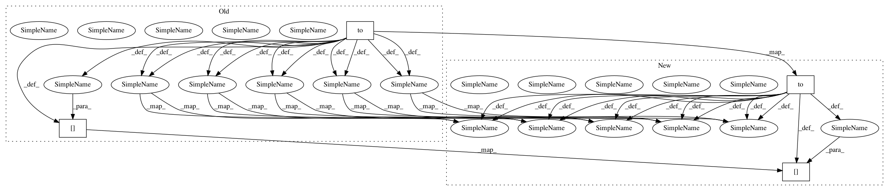

585303417c3f4641f61ac5a916a51505a67cc507,example/mpii.py,,validate,#,207
Before Change
output = model(input)
score_map = output[-1].cpu()
if flip:
flip_input = torch.autograd.Variable(
torch.from_numpy(fliplr(input.clone().numpy())).float().to(device),
volatile=True
)
flip_output_var = model(flip_input)
flip_output = flip_back(flip_output_var[-1].cpu())
score_map += flip_output
loss = 0
for o in output:
loss += criterion(o, target)
acc = accuracy(score_map, target.cpu(), idx)
// generate predictions
preds = final_preds(score_map, meta["center"], meta["scale"], [64, 64])
for n in range(score_map.size(0)):
predictions[meta["index"][n], :, :] = preds[n, :, :]
if debug:
gt_batch_img = batch_with_heatmap(input, target)
pred_batch_img = batch_with_heatmap(input, score_map)
if not gt_win or not pred_win:
plt.subplot(121)
gt_win = plt.imshow(gt_batch_img)
plt.subplot(122)
pred_win = plt.imshow(pred_batch_img)
else:
gt_win.set_data(gt_batch_img)
pred_win.set_data(pred_batch_img)
After Change
output = model(input)[-1]
score_map = output[-1].cpu()
if flip:
flip_input = torch.from_numpy(fliplr(input.clone().numpy())).float().to(device)
flip_output_var = model(flip_input)
flip_output = flip_back(flip_output_var[-1].cpu())
score_map += flip_output
loss = 0
for o in output:
loss += criterion(o, target)
acc = accuracy(score_map, target.cpu(), idx)
// generate predictions
preds = final_preds(score_map, meta["center"], meta["scale"], [64, 64])
for n in range(score_map.size(0)):
predictions[meta["index"][n], :, :] = preds[n, :, :]
if debug:
gt_batch_img = batch_with_heatmap(input, target)
pred_batch_img = batch_with_heatmap(input, score_map)
if not gt_win or not pred_win:
plt.subplot(121)
gt_win = plt.imshow(gt_batch_img)
plt.subplot(122)
pred_win = plt.imshow(pred_batch_img)
else:
gt_win.set_data(gt_batch_img)
pred_win.set_data(pred_batch_img)
In pattern: SUPERPATTERN
Frequency: 3
Non-data size: 4
Instances
Project Name: bearpaw/pytorch-pose
Commit Name: 585303417c3f4641f61ac5a916a51505a67cc507
Time: 2019-01-24
Author: platero.yang@gmail.com
File Name: example/mpii.py
Class Name:
Method Name: validate
Project Name: nicola-decao/s-vae-pytorch
Commit Name: 4537298ec78fbf30cd4fe914e9668cd3445373b2
Time: 2018-07-28
Author: nicola.decao@student.uva.nl
File Name: hyperspherical_vae/distributions/von_mises_fisher.py
Class Name: VonMisesFisher
Method Name: __while_loop
Project Name: nicola-decao/s-vae-pytorch
Commit Name: 3a3916adbe18066f8fdf854ae1c9edbb28103ec3
Time: 2018-07-28
Author: nicola.decao@student.uva.nl
File Name: hyperspherical_vae/distributions/von_mises_fisher.py
Class Name: VonMisesFisher
Method Name: __while_loop